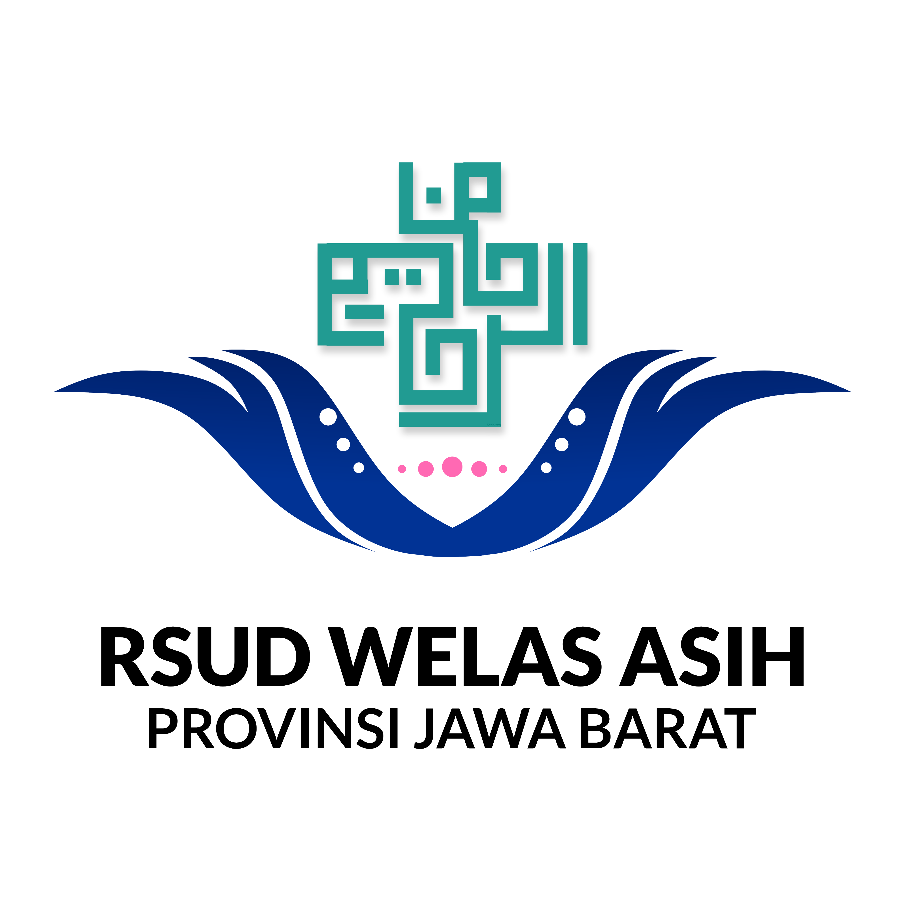

RSUD WELAS ASIH Provinsi Jawa BaratBuku Informasi Medis dan Asuhan Keperawatan Terintegrasi Digital
Platform terintegrasi untuk standar prosedur keperawatan, manajemen tindakan, dan panduan pasien. Transparan, mudah diakses, dan selalu diperbarui.

Kelebihan & Fitur
Akses Cepat
Temukan prosedur keperawatan dalam hitungan detik dengan sistem pencarian cerdas.
Update Real-time
Data langsung terupdate pada seluruh platform secara real time
Visual Alur
Setiap SOP dilengkapi diagram alur yang mudah dipahami.
Responsif
Dapat diakses dari berbagai perangkat dengan pengalaman optimal.
Berita Terkini
Pengumuman
Pertanyaan Umum
SOP Umum Keperawatan
Kumpulan Standar Operasional Prosedur umum yang berlaku untuk semua area keperawatan. Setiap SOP dilengkapi dengan alur detail, panduan langkah demi langkah, dan referensi terkini.
Manajemen Keperawatan
Kumpulan Standar Operasional Prosedur untuk manajemen keperawatan, termasuk administrasi, pengelolaan pasien, dan koordinasi tim.
Tindakan Keperawatan
Kumpulan Standar Operasional Prosedur untuk tindakan keperawatan spesifik berdasarkan kategori. Pilih kategori di bawah untuk melihat prosedur yang tersedia.